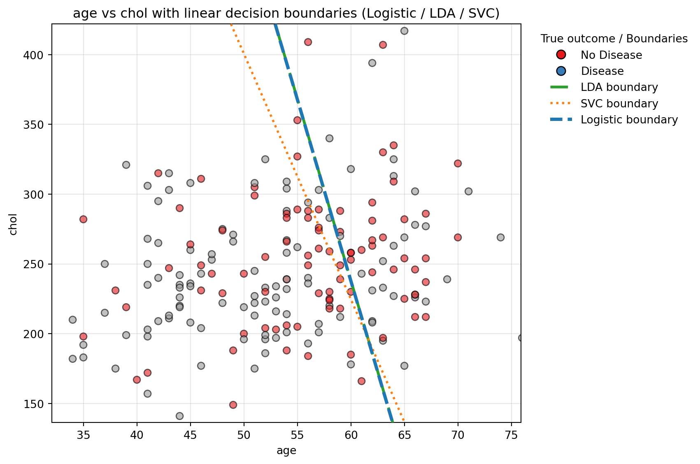

import pandas as pd
import numpy as np
import plotnine as p9
import matplotlib.pyplot as plt
from sklearn.pipeline import Pipeline
from sklearn.compose import make_column_selector, ColumnTransformer
from sklearn.preprocessing import StandardScaler, OneHotEncoder, PolynomialFeatures
from sklearn.linear_model import LinearRegression, Ridge, Lasso, ElasticNet , LogisticRegression
from sklearn.model_selection import train_test_split, cross_val_score, GridSearchCV
from sklearn.metrics import r2_score
from sklearn.discriminant_analysis import LinearDiscriminantAnalysis
from sklearn.svm import SVCThe Data
At this link, you will find a dataset containing information about heart disease patients: https://www.dropbox.com/scl/fi/0vrpdnq5asmeulc4gd50y/ha_1.csv?rlkey=ciisalceotl77ffqhqe3kujzv&dl=1
A description of the original dataset can be found here: https://archive.ics.uci.edu/dataset/45/heart+disease (However, this dataset has been cleaned and reduced, and the people have been given fictious names.)
data = pd.read_csv(r"https://www.dropbox.com/scl/fi/0vrpdnq5asmeulc4gd50y/ha_1.csv?rlkey=ciisalceotl77ffqhqe3kujzv&dl=1")1. Logistic Regression
Fit a Logistic Regression using only age and chol (cholesterol) as predictors.
For a 55 year old, how high would their cholesterol need to be for the doctors to predict heart disease is present?
How high for the doctors to estimate a 90% chance that heart disease is present?
X_1 = data[["age", "chol"]]
y_1 = data["diagnosis"]
ct = ColumnTransformer(
[
("dummify",
OneHotEncoder(sparse_output = False, handle_unknown='ignore'),
make_column_selector(dtype_include=object)),],
remainder = "passthrough"
)
pipe1 = Pipeline(
[("preprocessing", ct),
("logistic_regression", LogisticRegression())]
)fitted_1 = pipe1.fit(X_1, y_1)
coef1 = fitted_1.named_steps["logistic_regression"].coef_
int1_1 = fitted_1.named_steps["logistic_regression"].intercept_
w1age_1 = coef1[0,[0]]
w2chol_1 = coef1[0,[1]]# y(0) = W1*age + W2+chol + int
(0 - (w1age_1 * 55) - int1_1)/ w2chol_1array([367.8748898])(0.9542 - (w1age_1 *55) - int1_1) / w2chol_1array([897.62150021])2. Linear Discriminant Analysis
Fit an LDA model using only age and chol (cholesterol) as predictors.
For a 55 year old, how high would their cholesterol need to be for the doctors to predict heart disease is present?
pipe2 = Pipeline(
[("preprocessing", ct),
("LDA", LinearDiscriminantAnalysis())]
)fitted_2 = pipe2.fit(X_1, y_1)
coef2 = fitted_2.named_steps["LDA"].coef_
int1_2 = fitted_2.named_steps["LDA"].intercept_
w1age_2 = coef2[0,[0]]
w2chol_2 = coef2[0,[1]]# y(0) = W1*age + W2+chol + int
(0 - (w1age_2 * 55) - int1_2)/ w2chol_2array([368.23535753])3. Support Vector Classifier
Fit an SVC model using only age and chol as predictors. Don’t forget to tune the regularization parameter.
For a 55 year old, how high would their cholesterol need to be for the doctors to predict heart disease is present?
pipe3 = Pipeline(
[("preprocessing", ct),
("SVC", SVC(kernel='linear', C=1.0))]
)fitted_3 = pipe3.fit(X_1, y_1)
coef3 = fitted_3.named_steps["SVC"].coef_
int1_3 = fitted_3.named_steps["SVC"].intercept_
w1age_3 = coef3[0,[0]]
w2chol_3 = coef3[0,[1]]# y(0) = W1*age + W2+chol + int
(0 - (w1age_3 * 55) - int1_3)/ w2chol_3array([312.70052778])4. Comparing Decision Boundaries
Make a scatterplot of age and chol, coloring the points by their true disease outcome. Add a line to the plot representing the linear separator (aka decision boundary) for each of the three models above.
xname, yname = "age", "chol"
models = {
"Logistic": pipe1,
"LDA": pipe2,
"SVC": pipe3,
}x1, x99 = np.nanpercentile(data[xname], [1, 99])
y1, y99 = np.nanpercentile(data[yname], [1, 99])
padx = (x99 - x1) * 0.05 or 1.0
pady = (y99 - y1) * 0.05 or 1.0
xs = np.linspace(x1 - padx, x99 + padx, 400)
ys = np.linspace(y1 - pady, y99 + pady, 400)
xx, yy = np.meshgrid(xs, ys)grid = pd.DataFrame({xname: xx.ravel(), yname: yy.ravel()})
for col in X_1.columns:
if col in (xname, yname):
continue
if pd.api.types.is_numeric_dtype(X_1[col]):
grid[col] = float(np.nanmedian(X_1[col]))
else:
grid[col] = X_1[col].mode(dropna=True).iat[0]
# make sure column order matches training schema
grid = grid.reindex(columns=X_1.columns)from matplotlib.lines import Line2D
fig, ax = plt.subplots(figsize=(9, 6))
codes, class_labels = pd.factorize(data["diagnosis"]) # -> ints + label order
ax.scatter(data[xname], data[yname], c=codes, cmap="Set1",
edgecolors="k", s=40, alpha=0.6, zorder=2)
class_handles = [
Line2D([0],[0], marker='o', color='w',
markerfacecolor=plt.cm.Set1(i), markeredgecolor='k',
markersize=8, label=lab)
for i, lab in enumerate(class_labels)
]
# styles for legend proxies
legend_styles = {
"LDA": dict(color="tab:green", lw=2.5, ls="-."),
"SVC": dict(color="tab:orange", lw=2.0, ls=":"),
"Logistic": dict(color="tab:blue", lw=3.0, ls="--"),
}
# same styles translated to contour kwargs
contour_styles = {
name: dict(colors=st["color"], linewidths=st["lw"], linestyles=st["ls"])
for name, st in legend_styles.items()
}
boundary_handles = []
for name in ["LDA", "SVC", "Logistic"]:
model = models[name]
# decision surface for this model
if hasattr(model, "decision_function"):
s = model.decision_function(grid)
if getattr(s, "ndim", 1) > 1: # multiclass guard
s = s[:, 1]
Z = s.reshape(xx.shape); levels = [0.0]
else:
proba = model.predict_proba(grid)
idx = 1 if proba.shape[1] > 1 else 0
Z = proba[:, idx].reshape(xx.shape); levels = [0.5]
# draw boundary with proper contour kwargs
ax.contour(xx, yy, Z, levels=levels, zorder=6, **contour_styles[name])
# proxy handle for legend
st = legend_styles[name]
boundary_handles.append(Line2D([0], [0], color=st["color"], lw=st["lw"],
ls=st["ls"], label=f"{name} boundary"))
ax.set_xlabel(xname); ax.set_ylabel(yname)
ax.set_title("age vs chol with linear decision boundaries (Logistic / LDA / SVC)")
ax.grid(True, alpha=0.3)
ax.set_aspect("auto")
ax.set_xlim(xs.min(), xs.max()); ax.set_ylim(ys.min(), ys.max())
combined = list(class_handles) + list(boundary_handles)
seen, dedup = set(), []
for h in combined:
lab = h.get_label()
if lab not in seen:
dedup.append(h); seen.add(lab)
ax.legend(handles=dedup, title="True outcome / Boundaries",
loc="upper left", bbox_to_anchor=(1.02, 1), frameon=False)
plt.tight_layout()
plt.show()